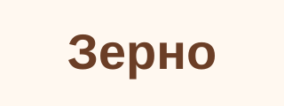
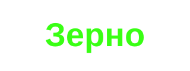
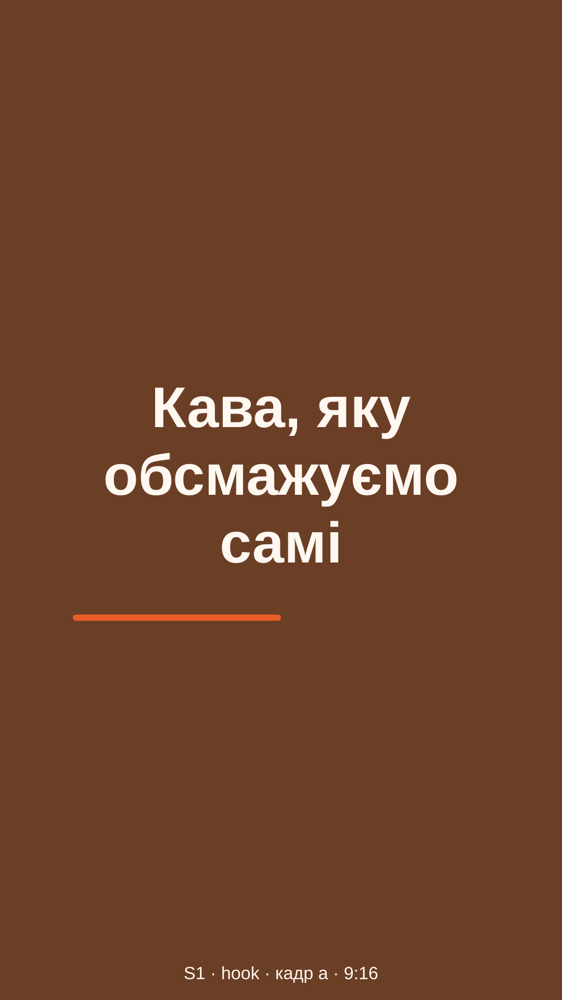
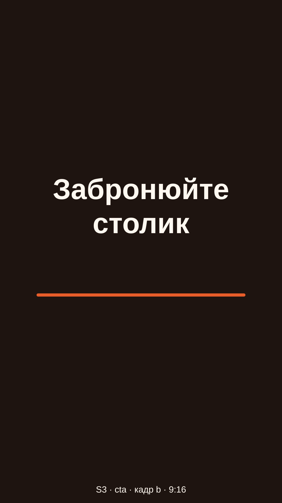
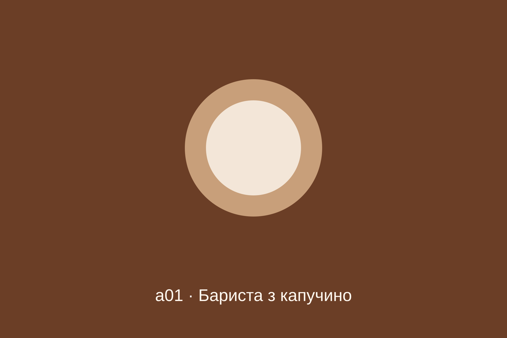

Еталон для ТЗ docs/design/dark-theme-spec.md. Змінюється лише колір і трекінг дисплейних кеглів; розкладка, тексти, шрифти й радіуси — як у AdCreative Reference.dc.html. Усі кадри зібрано на тих самих CSS-правилах, переписаних на нові токени. Id кадру = id фікстури; темна тема відкривається як /?fixture=<id>&theme=dark.
T
Токени
tokens.css · :root (світла, значення без змін) і :root[data-theme="dark"]
наведення працює на живих елементах; статичні копії станів — поруч
Світла
Темна
SW
Перемикач теми
Три режими: Світла · Темна · Як у системі; за замовчуванням для всіх — «Як у системі». Гліф режиму повторює мову ромбів: контур = світла, заповнений = темна, половина = як у системі. Вибір — у localStorage adc.theme; застосовується до першого кадру, синхронізується між вкладками, не перезавантажує сторінку й не рве SSE.
SW1 · Розміщення — три варіанти
A · Коло в кожному топбарі
12кредитів+Новий проєктОК
AdCreative12кредитів+ОК
+ Видно одразу, один клік до меню.
− На 390 ряд старту користувача не вміщується: 115 + 140 + 20 + 32 + 20 + 32 = 359 px > 342 (червоне коло виходить за поле). Зменшити відступи заборонено.
− Налаштування «раз і назавжди» займає постійне місце у 56-px топбарі поруч зі статусом, балансом і «Новий проєкт».
B · Група «Тема» в меню акаунта + коло для гостяОБРАНО
користувач — 5 оболонок, одне місцегість — лише старт
Увійти
+ account-controls.js монтується в усіх оболонках користувача (старт, воркспейс, кабінет, адмінка, checkout) — один код, одне місце, порядок Tab = видимий.
+ Ряд 32 px не змінюється; на 390 вміщується. Меню вже має повну клавіатурну модель (стрілки, Home/End, Esc, Tab).
+ Гостю меню акаунта недоступне — він отримує коло перед «Увійти» на старті; інші оболонки (кабінет, адмінка, checkout) вимагають входу.
− Користувачу два кліки замість одного — прийнятно для налаштування, яке змінюють рідко.
C · Сегмент у профілі кабінету
Тема
СвітлаТемнаЯк у системі
+ Готові примітиви .spec-row і .seg.
− Лише для користувача, 3+ кліки і перехід зі сцени в кабінет посеред генерації.
− Гість і модалка входу — без доступу. Відхилено.
SW2 · Стани · 1440 · обидві теми
{{ th.name }}data-theme="{{ th.id }}"
default · світла
default · темна
default · система
:hover · --edge-strong
:focus-visible · 2px --focus-ring
:active / відкрито · --fill-strong
SW3 · 390 · старт · гість (коло 44 = висота «Увійти» на 390) і користувач (пункти меню 44)
AdCreativeУвійти
Сайт стає роликом.
AdCreative12кредитів+
SW4 · Поведінка
{{ b.k }}{{ b.v }}{{ b.why }}
D
Дані клієнта на темному
дані не перефарбовуються; змінюється лише підкладка, кільце й тінь навколо них
{{ th.name }}
Лого

✓
непрозорий (logo-a02) · обраний
темний #111 · прозоре тло
білий #FFF · прозоре тло

неон #39FF14 · прозоре тло
Плита --logo-plate: у світлій = --card (без змін), у темній L 0.86 (#D4D0CB). Лого з сайту зроблене для світлого тла хедера — плита повертає йому рідне тло. Чорний лого: 12.3:1. Білий лого на прозорому тлі нечитабельний в обох темах (у світлій 1.03:1, у темній 1.53:1) — так само, як зараз; адаптивна плита потребує аналізу пікселів → поза скоупом.
Палітра
{{ sw.name }}{{ sw.hex }}
Кільце --media-ring (α 0.14 від --ink у темній) тримає край свотча, що збігається з фоном: #1C1A18 на картці — 1.12:1 без кільця. Текст на свотчі обирає cp-brand.js за брендом (textOnDark / textOnLight) — це дані, тема його не чіпає. Неон лишається неоном.
Стіли й фото



Темний стіл s3-b (#1E1410) на сцені — 1.09:1: край тримає лише кільце. Смугастий плейсхолдер — два близькі тони --placeholder-a/b.
Відео
9:16
1:1
16:9 · contain → поля --media-bg
Плеєр: тінь (у темній — від --media-bg, α 0.72) + кільце 1 px α 0.10. Підкладка --media-bg L 0.145 — найтемніше на екрані. Нативні контроли стають темними через color-scheme.
S
Екрани · 1440×900
перемикач у кадрі працює: режим «{{ sPrefLabel }}» → тема {{ sThemeLabel }} · зміна — кросфейд 200 мс (View Transitions)
Решта кадрів (S2–S3, S6, X1–X6, K, N1–N15, F) не перемальовуються: змінюється лише колір, а колір повністю визначає таблиця T + міграція з ТЗ. Приймання — фікстурою &theme=dark проти світлого кадру з AdCreative Reference.dc.html / AdCreative Accounts Reference.dc.html за чек-листом ТЗ (розділ «Приймання»).